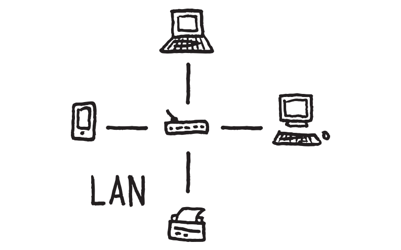

Que es LAN
29 de febrero 2024 por Cherly Maribel García Ramiréz Se conoce como red LAN (siglas del inglés: Local Área Network, que traduce Red de Área Local) a una red informática cuyo alcance se limita a un espacio físico reducido, como una casa, un departamento o a lo sumo un edificio.
A través de una red LAN pueden compartirse recursos entre varias computadoras y aparatos informáticos (como teléfonos celulares, tabletas, etc.), tales como periféricos (impresoras, proyectores, etc.), información almacenada en el servidor (o en los computadores conectados) e incluso puntos de acceso a la Internet, a pesar de hallarse en habitaciones o incluso pisos distintos.
Una LAN, o red de área local, es un grupo de dispositivos informáticos conectados en un área localizada que suelen compartir una conexión centralizada a Internet.
¿Cómo funcionan las redes LAN?
La mayoría de las LAN se conectan a Internet en un punto central: un enrutador. Las LAN domésticas suelen utilizar un único enrutador, mientras que las LAN en espacios más grandes pueden utilizar además conmutadores de red para una entrega de paquetes más eficiente.

Una LAN permite a los usuarios conectarse a servidores internos, sitios web y otras LAN que pertenecen a la misma red de área amplia (WAN). Ethernet y Wi-Fi son las dos formas principales de habilitar las conexiones LAN.
Características de las redes PAN
Las LAN utilizan conexiones locales, como cables Ethernet y puntos de acceso inalámbricos.
Las LAN son más rápidas porque abarcan menos distancia y tienen menos congestión.
Conexión cableada: Las redes LAN suelen utilizar cables físicos, como cables Ethernet, para interconectar los dispositivos. Esto proporciona una conexión estable y de alta velocidad, lo que es especialmente importante para la transferencia de datos intensiva